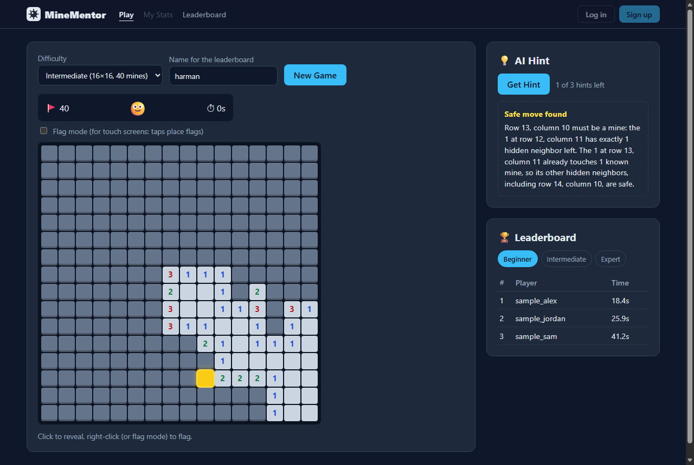

TCSS 460: Client/Server Programming for Internet Applications · System design and initial working prototype
| Team | The Flaggers (Group 4) |
|---|---|
| Members | Noah (team leader), Waleid, Harman |
| Repository | github.com/annoah-edu/tcss460-minesweeper-project |
Minesweeper is a logic puzzle, but most players never learn the logic. When they get stuck they guess, lose, and quit. Asking a general AI chatbot doesn't help much either: in our own early testing, the AI sometimes called a square "safe" when it wasn't.
MineMentor is a Minesweeper web app that teaches as you play. Boards are generated on the server and mine positions never leave it, so the game can't be cheated by inspecting the page. When a player asks for a hint, a rule-based solver on the server finds a square that is provably safe and records which numbered cells prove it. The AI only puts that proof into plain language, so the explanation is always as correct as the hint. User accounts save each player's games so they can see their wins, losses and best times improve.
Intended users:
The grader's Phase I feedback was positive:
"Strong AI design overall: the solver tool keeps hints correct and the AI explains them."
No concerns were raised, so the core concept and scope are unchanged. We used Phase II to make the weakest parts of the proposal more specific, and built several of them into the prototype:
| Revision | What changed | Status |
|---|---|---|
| AI hints carry their proof | The solver returns the safe cell and its justification: which numbered cells and which deduced mines prove it is safe. The LLM may only rephrase that justification. | Built (solver + proof) |
| Honest wording | If the solver finds no provably safe cell, the hint says "No guaranteed safe move was found" instead of claiming none exists or inventing one. | Built |
| Technical approach | Phase I listed HTML, CSS and Tailwind as external services. They are now part of the frontend stack. The real external dependencies are the LLM API and the database (see B.1 and D.3). | Updated |
| Security | Mine positions stay on the server. The browser only receives revealed cells, so players can't inspect the page to find mines. | Built |
| AI cost and abuse | From our risk review: every hint goes through our server, which keeps the API key private, and each game is limited to 3 hints. A short cooldown between hints will be added with the LLM. | Limit built |
| Feature | Priority | Phase II | Description |
|---|---|---|---|
| Server-generated boards | Core | Built | Beginner 9×9 (10 mines), Intermediate 16×16 (40), Expert 16×30 (99). Mines are placed after the first click, so it is always safe. |
| Gameplay | Core | Built | Reveal with automatic opening of empty areas, flag and unflag, mine counter, server-side timer, win/loss detection. |
| AI hint explainer: solver | Core | Built | Finds a provably safe square from the visible numbers only, highlights it on the board, and returns the proof plus a template explanation. |
| AI hint explainer: LLM | Core | Phase III | The LLM rewrites the solver's proof in friendlier language. If the call fails, the template explanation is used. |
| User accounts | Core | Phase III | Sign up, log in and log out. Passwords are stored hashed, never as plain text. |
| Saved game history (My Stats) | Core | Phase III | Wins, losses and best time for each difficulty, from the games saved for each account. |
| Leaderboard | Optional | Built | Fastest server-timed wins for each difficulty. Uses a player name for now and will be tied to accounts. |
| Post-game review | Optional | Phase III | After a game, replays the saved moves and points out where a safe move was available. |
MVP: (1) playable Minesweeper with Beginner, Intermediate and Expert boards generated on the server, (2) user accounts with saved game history (wins, losses, best times per difficulty), and (3) the AI hint explainer backed by the server-side solver. The Phase II prototype covers (1) completely and the solver half of (3). The leaderboard and post-game review are extras and are only finished once the MVP works.
Tech stack. React (Vite) with HTML, CSS and JavaScript on the frontend. The prototype uses plain CSS and will move to Tailwind CSS as the final design is built. Node.js and Express on the backend. The two external dependencies are the database and the LLM API.
How the components interact. React never decides anything about the game. It sends the player's action to the API and draws whatever comes back.
POST /api/games/:id/reveal with the row and column. Routes
validate the input, the game engine applies the move, and the response is a board view in which
unopened cells are just "hidden". During development, Vite proxies /api to Express, so the browser
talks to a single origin.POST /api/games/:id/hint. The solver reads only what the
player can see (revealed numbers and hidden cells; player flags are ignored because they can be wrong). It works
out which hidden cells must be mines and which must be safe, then returns one safe cell, the proof, and an
explanation. As a safety net, the server checks the cell against the real board and refuses to send a hint that
would be wrong. React highlights the cell in yellow and shows the explanation.gameStore / scoreStore functions, so the routes don't change.{ "error": { "status", "message" } }, and
React shows the message to the player.How users interact with it:

We will use a relational database, PostgreSQL or SQLite (final pick at the start of Phase III). Our data has clear relationships: a user has many games, and a game has many moves. Stats such as wins, losses and best times are computed with SQL queries over the games table. The schema below works in both databases. Passwords are hashed with bcrypt and never stored or logged as plain text.
Phase II (now): games in progress are kept in an in-memory Map (cleared after 24 hours or on restart),
and leaderboard scores are saved to backend/data/scores.json. Both are behind small store modules
(gameStore.js, scoreStore.js), so swapping in the database only changes those two files.
| Table | Columns | Notes |
|---|---|---|
| users | user_id PK, username UNIQUE, email UNIQUE, password_hash, created_at |
One row per account. |
| games | game_id PK (UUID), user_id FK → users (NULL for guests), difficulty, rows, cols,
mine_count, mine_positions (cell indexes), status (in_progress / won / lost),
started_at, ended_at, hints_used |
mine_positions is server-only and never appears in an API response. A win's time is ended_at − started_at. |
| moves | move_id PK, game_id FK → games, move_number, action (reveal / flag / unflag / hint),
row, col, created_at |
Lets a game be resumed by replaying it, and powers the optional post-game review. |
The board a player sees is not stored. It is computed from mine_positions and the moves on every response.
Each cell is "hidden", "flag", a number 0–8, or, after a loss, "mine" / "exploded" / "wrong-flag".
Illustrative rows showing the intended structure (mine lists shortened):
-- users
user_id | username | email | password_hash | created_at
1 | harman | harman@example.edu | $2b$12$Qk7...(bcrypt hash) | 2026-11-06 14:02:11
-- games
game_id | user_id | difficulty | rows | cols | mine_count | mine_positions | status | started_at | ended_at | hints_used
'1ac0…c49b' | 1 | beginner | 9 | 9 | 10 | [11,12,25,30,47,…] | won | 2026-11-06 14:05:00 | 2026-11-06 14:05:42 | 1
'8242…2ddc' | 1 | intermediate | 16 | 16 | 40 | [3,18,40,41,77,…] | lost | 2026-11-06 14:07:10 | 2026-11-06 14:08:55 | 2
-- moves (first moves of game '1ac0…c49b')
move_id | game_id | move_number | action | row | col
1 | '1ac0…c49b' | 1 | reveal | 4 | 4
2 | '1ac0…c49b' | 2 | hint | 1 | 4
3 | '1ac0…c49b' | 3 | reveal | 1 | 4
4 | '1ac0…c49b' | 4 | flag | 1 | 3My Stats is one grouped query, returned to React as JSON:
SELECT difficulty,
COUNT(*) FILTER (WHERE status = 'won') AS wins,
COUNT(*) FILTER (WHERE status = 'lost') AS losses,
MIN(ended_at - started_at) FILTER (WHERE status = 'won') AS best_time
FROM games WHERE user_id = $1 GROUP BY difficulty;
{ "stats": [ { "difficulty": "beginner", "wins": 1, "losses": 0, "bestTimeSeconds": 42.0 },
{ "difficulty": "intermediate", "wins": 0, "losses": 1, "bestTimeSeconds": null } ] }| Operation | What happens |
|---|---|
| Create | Signing up creates a users row. New Game creates a games row. The first reveal places the mines, away from the clicked cell. Each reveal, flag and hint adds a moves row. |
| Retrieve | Load a game's board view, a user's stats and game history, and the leaderboard (fastest won games per difficulty). |
| Modify | Moves update the game's status, ended_at and hints_used. Reveal also opens empty areas and checks for a win or loss. |
| Process | The solver turns the visible board into a hint plus its proof. Every response hides the mines. Times are computed on the server. |
| Delete | A player can abandon an unfinished game. Unfinished guest games are cleaned up after 24 hours. |
| Method | Endpoint | Functionality | Status |
|---|---|---|---|
| GET | /api/health | Confirms the API is running. | Built |
| GET | /api/difficulties | Lists difficulty presets (rows, cols, mines). | Built |
| POST | /api/games | Starts a game. Body: difficulty, optional playerName. Returns 201 with the board view. | Built |
| GET | /api/games/:gameId | Current state of a game (for example, after a refresh). | Built |
| POST | /api/games/:gameId/reveal | Reveals row, col, opens empty areas, and detects a win or loss. | Built |
| POST | /api/games/:gameId/flag | Toggles a flag on a hidden cell. | Built |
| POST | /api/games/:gameId/hint | The solver returns a provably safe cell, its proof and an explanation (LLM-reworded in Phase III). 3 per game. | Built |
| GET | /api/leaderboard?difficulty=&limit= | Fastest wins for one difficulty, with ranks. | Built |
| POST | /api/auth/signup | Creates an account (username, email, password, hashed with bcrypt). | Phase III |
| POST | /api/auth/login | Checks the password and starts a session (HTTP-only cookie). | Phase III |
| POST | /api/auth/logout | Ends the session. | Phase III |
| GET | /api/users/me/stats | Wins, losses and best time per difficulty (the My Stats panel). | Phase III |
| GET | /api/users/me/games | The player's saved game history. | Phase III |
| GET | /api/games/:gameId/review | Post-game review: replays the moves and marks where a safe move existed (optional). | Phase III |
Errors. Every error uses one JSON shape, for example {"error":{"status":404,"message":"No game found with id nope."}}.
| Status | When |
|---|---|
| 400 | Invalid JSON, unknown difficulty, invalid name, row/col missing or off the board, or a bad limit. |
| 401 | (Phase III) Not logged in for an account-only endpoint, or wrong password. |
| 404 | No game with that id, or no such API route. |
| 409 | A move or hint on a game that is already won or lost. |
| 429 | Hint limit reached for this game. |
| 500 | Unexpected error. It is logged on the server, and the client gets a generic message. |
Asking for a hint on a Beginner game after the first click. This response was captured from the running prototype.
The proof lists exactly which numbers and deduced mines make the cell safe. The Phase III LLM receives this
proof and may only reword the explanation.
POST /api/games/1ac0c050-3767-4c86-bb4e-eb810c1fc49b/hint
(no request body)HTTP/1.1 200 OK
Content-Type: application/json
{
"hint": {
"type": "safe",
"row": 1,
"col": 4,
"explanation": "Row 2, column 3 must be a mine: the 1 at row 3, column 2 has exactly 1 hidden neighbor left. Row 2, column 4 must be a mine: the 2 at row 3, column 3 has exactly 2 hidden neighbors left. The 2 at row 3, column 4 already touches 2 known mines, so its other hidden neighbors, including row 2, column 5, are safe.",
"proof": {
"rule": "satisfied",
"numbers": [{"row":2,"col":3,"value":2}],
"knownMines": [{"row":1,"col":2},{"row":1,"col":3}]
}
},
"hintsUsed": 1,
"hintsRemaining": 2
}(row and col in JSON start at 0. The explanation counts from 1 because it is written for players.)
When nothing can be proven, the response is
{"hint":{"type":"none","explanation":"No guaranteed safe move was found from the numbers on the board. You may need to guess."}, …}.
| Provider and purpose | Anthropic Claude API (a small, low-cost model such as Claude Haiku). It turns the solver's proof into a short, friendly explanation that a new player can learn from. |
|---|---|
| What it adds | The solver decides the hint, so the hint is always correct. The LLM only improves the wording and tone. The game never depends on it: if the call fails, times out, or returns text that doesn't mention the hinted cell, the template explanation (already built) is shown instead. |
| Sent | The proof object and template explanation from D.2, plus the visible numbers around the hinted cell. No mine positions, and no usernames or emails. |
| Received | One to three sentences of explanation, returned to React as hint.explanation. |
| Authentication and cost | API key sent in the x-api-key header and stored as ANTHROPIC_API_KEY in backend/.env (listed in .env.example, ignored by git). Only Express calls the API, so the key never reaches frontend code. The 3-hints-per-game limit is already enforced, and a short cooldown between hints will be added. |
| Database | PostgreSQL or SQLite (Part C). Connection settings go in backend/.env, never in source code. |
Source code is in frontend/ and backend/. Setup and run steps are in README.md.
The prototype implements the User → React → Express Web API → React loop for gameplay and hints:
App, NavBar, NewGameForm, StatusBar, GameBoard,
Cell, HintPanel, Leaderboard). Controls include a select, text input, buttons and clickable cells.
All requests go through fetch in api.js. The board, counters, hint highlight and explanation, and leaderboard
are drawn from the server's responses, and server errors are shown to the player. The layout works on phones.npm test in backend/). One plays 300 random games by following hints and
checks that no hint ever points at a mine. The others cover the game rules, validation, a full game won through the API,
and the hint limit. The UI was also played end to end in a browser (Figure 3).